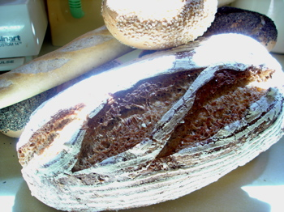
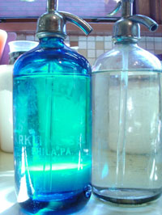

Mom is hometown proud
For quite some time now I’ve been wanting to take a field trip to the Mediterra bakery and store, out toward the Pittsburgh Ikea. Mediterra breads are available at a couple of retail outlets, including Whole Foods, but the selection is sparse and the prices are high. We have another great bakery here in Pittsburgh, Breadworks, and I’ve always found a trip to their bakery well worth it, as the prices there are a fraction of what you pay at the stores that carry their products.
The Mediterra bakery is located in an industrial park, not too far off route 279. The “store” is just a little room on the left as you enter the building, and seems to be staffed by whoever notices first that a customer has arrived. The woman who helped us told us that you can buy bread pretty much whenever someone is in the bakery baking, which seems to be almost all the time.

The big disappointment, to me, was that the chocolate-cherry bread that I had seen listed on the website is apparently only available on holidays, and the raisin-pecan on the weekends. The prices weren’t significantly lower than at Whole Foods, either, so I’m not sure I’ll be making this drive again. I did get some delicious bread, which you can see pictured here.
My second topic is Pittsburgh Seltzer Works, which does not have a website, but their phone number is 412-464-0300. Kate, at The Accidental Hedonist has gotten me all het up about high-fructose corn syrup, and I’ve begun to examine labels much more carefully in the past couple of weeks. It’s amazing how many foods and drinks have this stuff in them, even so-called natural products, and foods that have no business being sweetened at all, like Thomas’s bagels, which list HFCS as the third ingredient. So I’m on a crusade to eliminate it from my pantry shelves, beginning with those seasoned tomatoes which I had been defending.

Anyway, back to the seltzer. This stuff is terrific, and of course HFCS-free, and is something my husband had been having delivered even before we began to date, back in the early 80’s. The founders of the company have scoured the country for antique seltzer bottles, make the seltzer with filtered water and CO2, and deliver it to our home in wooden crates for about $1/bottle. I think the bottles look nice on the table, and if you want you can mix it with pure juice of any flavor (grape is nice) for a refreshing summer drink.
Comments
I’m crazy about Medittera breads—especially the Mt. Athos firebread. That one, and the Farm Bread, both last for days on the counter, and have all sorts of interesting wheaty flavors. They make dynamite bruschettas, as I’m sure you know.
You can also get it at Prestogerge in the Strip—though the selection is small, and they don’t always have it.
Breadworks bread is far from bad, but I don’t think it’s nearly as wonderful. A pity, as it is much more widely available.
Love the seltzer idea, and the bottles are great looking.
Those seltzer bottles are great looking and what a cool delivery service. I wish we had something like that available.
Add a comment